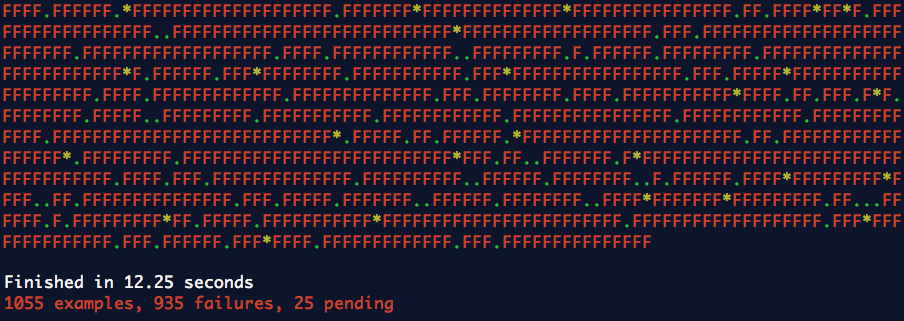

Ruby Midwest 2013
Testing Fun With Test Reporters
Sometimes this happens
Frustration Driven Development
The Most Important Optimization: Happiness
Step 1
Pass, Fail, Pending or Skip?
Stream to use for output
MiniTest::Unit.output
Minitest: Start with initializing a new class
Some other Minittest test reporters
Some other Rspec test reporters
←→/
#